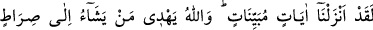

yürür.”
el-İrşâd’da kaydedildiği üzere âyette örümcek ve benzeri dörtten fazla ayak üzerinde
yürüyen haşerâta değinilmemesi, onlara fazla önem verilmediğindendir.
Fethu’r-Rahmân’da ise şöyle der: “Çünkü onların görünüş bakımından dört ayak
üzerine yürüyenler gibidirler. Asıl itibariyle onlar ayaklarından dördü üzerinde
yürürler. Nitekim el-Kevâşî’de böyle geçmektedir.
Âyette sürünenler iki ayak üstünde yürüyenden, onlar da dört ayak üstünde
yürüyenlerden önce zikredilmiştir. Çünkü âletsiz yürümek, iki ayak üzere yürümekten, o
da dört ayak üzere yürümekten daha çok Allah’ın kudretini gösterir.
“Allah dilediğini yaratır” O, tek bir maddeden olmakla birlikte burada zikredilen ve
zikredilmeyen, basit veya mürekkep dilediği sûretleri, uzuvları, şekilleri, hareketleri,
tabîatları, kuvvetleri ve fiilleri yaratır.
Hadîka sâhibi (Senâî) der ki:
Allah, dilediği her şeye kâdirdir
Bütün işler O’nun katında aşikârdır
Bir şâir de şöyle der:
Çamurun dışını nakışlarla bezeyen (insanı yaratan) O’dur
Gönüllerin içinde olanları bilen de O’dur
“Şüphesiz Allah her şeye kadirdir” dolayısıyla Allah, dilediğini dilediği şekilde
yapar.
46. Andolsun biz (bilmediklerinizi size) açık seçik bildiren âyetler indirdik. Allah,
dilediğini doğru yola iletir.
“Andolsun biz” dînî hükümler ve tekvînî/yaratılışla ilgili sırlardan açıklanması
gereken her şeyi “açık seçik bildiren âyetler indirdik. Allah dilediğini”, bu âyetler
hakkında doğru bir düşünceye ve mânâları husûsunda ince bir tefekkür ve anlayışa
muvaffak kılmak sûretiyle “doğru yola” yâni Allah’ın dini, rızâsına ve cennetine
ulaştıracak yolu olan İslâm’a “iletir.”
et-Te’vîlâtü’n-Necmiyye’de der ki: Allah Teâlâ sudan yaratılan bu canlıların
sîretinden haber vererek şöyle buyurmaktadır: “Bunlardan kimi karnı üstünde
yürür/sürünür” Yâni bunların sîreti, ömürlerini karınlarının şehvetlerini/arzularını elde
etme yolunda zâyî etmektedir. “Kimi iki ayak üstünde yürür”; yâni ömrünü fercinin